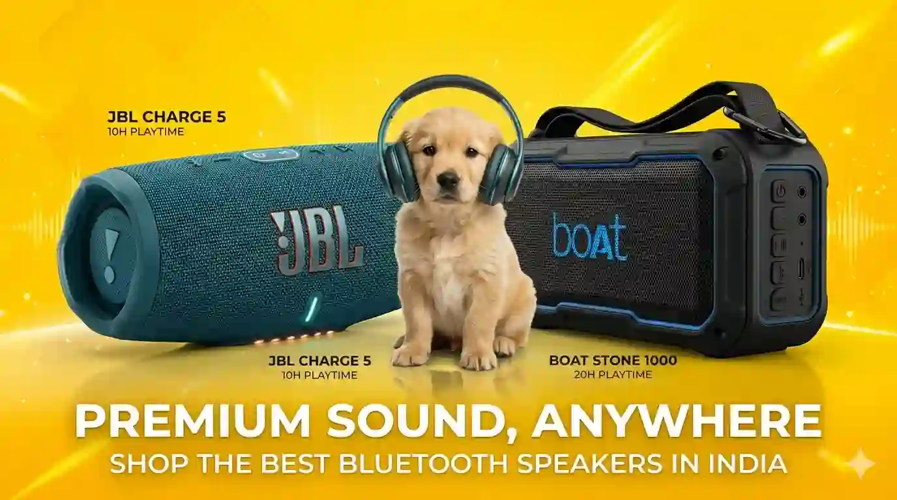
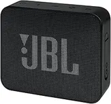
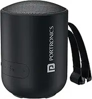
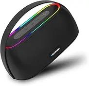

Best Bluetooth Speakers Under ₹2,000 — Top Budget Portable Wireless Speakers in India (2026 Buying Guide)

Top 5 Bluetooth speakers tested for sound clarity, deep bass punch, battery backup, build ruggedness, and total value — India 2026.
Portable Bluetooth speakers have become one of the most popular audio gadgets in India, offering a simple way to enjoy music, podcasts, movies, and calls without the hassle of wires. Thanks to advances in wireless technology, even affordable speakers today can deliver surprisingly good sound quality, strong battery life, and reliable connectivity for everyday use.
Whether you need a compact speaker for your bedroom, study desk, office, travel, picnics, workouts, or small gatherings, there are plenty of excellent options available in the budget segment. Modern portable speakers often include useful features such as Bluetooth 5.0 or newer connectivity, built-in microphones for calls, water resistance, long-lasting batteries, and lightweight designs that are easy to carry anywhere.
The challenge is that not every speaker performs as well as its specifications suggest. Some models offer loud volume but lack sound clarity, while others compromise on battery life, build quality, or wireless stability. With hundreds of choices available from different brands, finding the right speaker can quickly become confusing.
To help you make an informed decision, we carefully compared the best portable Bluetooth speakers under ₹2,000 based on the factors that matter most in real-world usage. Our evaluation focuses on sound quality, bass performance, battery backup, portability, durability, connectivity, ease of use, and overall value for money. This guide highlights the top options that deliver the best balance of performance and affordability, helping you choose the right portable Bluetooth speaker for your needs and budget.
💡 Quick Tips Before Buying a Bluetooth Speaker Under ₹2,000
- Check the RMS Wattage: Focus on RMS power output rather than peak power. An output of 5W to 12W RMS is ideal for single-room listening or close outdoor settings.
- Look for IPX7 Water Protection: If you plan on taking the speaker to pool parties, showers, or outdoor trips, IPX7 immersion protection is much better than basic IPX4 splash protection.
- Battery Lifespan Reality: Brands often test battery life at a conservative 50% volume. If you intend to play music at 80% or full volume, anticipate the real runtime to drop slightly.
- TWS (True Wireless Stereo) Support: This feature allows you to link two identical speakers together wirelessly to achieve an authenticated left-and-right channel stereo setup.
- Bluetooth Version: Opt for speakers carrying Bluetooth 5.0 or higher. Bluetooth 5.3 offers optimal power conservation and stable, distortion-free connectivity ranges.
👉 Here are our top 5 best Bluetooth speakers under ₹2,000 in India :
1. boAt Stone 350 Pro (Approx. ₹1,799) 🔥 Editor's Pick

⭐ Best Overall for Sound, Features & Value
Why We Picked It: The boAt Stone 350 Pro strikes one of the best balances between sound quality, portability, and features in the under ₹2,000 segment. It delivers a genuine 14W RMS output, which is more than enough for bedrooms, hostel rooms, small gatherings, and outdoor use. The sound signature is energetic with punchy bass and clear vocals, making it particularly enjoyable for Bollywood, Punjabi, EDM, and mainstream music. Bluetooth 5.3 ensures stable wireless connectivity, while TWS support lets you pair two identical Stone 350 Pro speakers for a true stereo experience. Although the speaker carries an IPX5 rating rather than the more desirable IPX7 protection, it is still capable of handling light rain, splashes, and everyday outdoor usage comfortably. The claimed 12-hour battery life is achievable at moderate volume levels, while users can realistically expect slightly lower runtime when listening at high volume.
- ✔ Genuine 14W RMS output delivers loud, room-filling sound without sounding weak or underpowered
- ✔ Bass feels punchy and enjoyable for Bollywood, Punjabi, EDM and workout playlists without overwhelming vocals
- ✔ Bluetooth 5.3 provides fast pairing, stable connections and better power efficiency than older Bluetooth versions
- ✔ TWS mode allows pairing two Stone 350 Pro speakers together for a wider and more immersive stereo soundstage
- ✔ Up to 12 hours battery backup at moderate volume; still offers respectable runtime during outdoor use
- ✔ AUX and TF Card support are useful when you don't want to rely entirely on Bluetooth streaming
- ❌ IPX5 splash resistance is useful for daily use but falls short of the IPX7 protection we prefer for travel and poolside use
- ❌ Battery runtime drops noticeably when music is played continuously above 80% volume, which is common with most budget speakers
2. JBL Go Essential (Approx. ₹1,899)

⭐ Best for Sound Clarity & Portability
Why We Picked It: The JBL Go Essential is ideal for buyers who value clean sound quality, trusted brand reliability, and true portability over sheer loudness. Despite its compact size, the speaker delivers surprisingly clear vocals and balanced audio that works exceptionally well for podcasts, YouTube videos, Bollywood tracks, and everyday music listening. Unlike many budget speakers that focus heavily on bass, the Go Essential maintains good vocal clarity even at higher volumes. Its IPX7 water-resistance rating is a major advantage in this price range, providing better protection than most competitors for poolside use, showers, and outdoor trips. While the speaker's 3.1W RMS output cannot compete with larger speakers for room-filling volume, it excels as a personal speaker that's easy to carry anywhere.
- ✔ JBL's well-tuned audio delivers clearer vocals and more balanced sound than many bass-heavy budget speakers
- ✔ IPX7 water protection offers genuine peace of mind around rain, pools, kitchens and bathroom use
- ✔ Extremely compact and lightweight design slips easily into backpacks, handbags and travel luggage
- ✔ Maintains clean sound quality at high volume levels without the harsh distortion common in ultra-budget speakers
- ✔ USB Type-C charging makes it convenient to charge using modern phone chargers and power banks
- ✔ Premium build quality feels durable and sturdy despite its small size
- ❌ 3.1W RMS output is noticeably less powerful than speakers like the boAt Stone 350 Pro and is best suited for personal listening
- ❌ No TWS pairing support, so you cannot wirelessly combine two speakers for true stereo sound
- ❌ Real-world battery backup is typically around 4–5 hours at higher volume levels, which is below several competitors in this segment
3. Portronics Soundpot 20W (Approx. ₹1,568)

⭐ Best Value for Money
Why We Picked It: The Portronics Soundpot 20W is one of the most feature-packed Bluetooth speakers available under ₹2,000. Its powerful 20W output delivers impressive loudness for house parties, outdoor gatherings, and larger rooms where smaller speakers may struggle. Bluetooth 5.3 connectivity ensures a stable wireless connection, while TWS support allows you to pair two Soundpot speakers together for a more immersive stereo experience. The speaker also includes a built-in microphone for hands-free calling and multiple playback options beyond Bluetooth. While its sound quality is geared more toward volume and bass than audiophile-level refinement, it offers excellent value for buyers who want maximum features and power at an affordable price.
- ✔ Powerful 20W output easily fills larger rooms and outdoor spaces with noticeably higher volume than many budget speakers
- ✔ Bluetooth 5.3 provides reliable connectivity, faster pairing and better power efficiency during extended listening sessions
- ✔ TWS support lets you pair two identical Soundpot speakers together for a wider and more immersive stereo sound experience
- ✔ Built-in microphone is convenient for taking calls without reaching for your smartphone
- ✔ Multiple playback options including Bluetooth, USB and AUX offer greater flexibility for different users
- ✔ Excellent value for money considering the combination of power, features and affordable pricing
- ❌ Sound quality prioritizes loudness and bass impact over the cleaner vocal clarity offered by premium brands such as JBL
- ❌ Battery backup is adequate for casual use but falls short of the longer runtimes offered by some competitors
4. Mivi Play Bluetooth Speaker (Approx. ₹899)

⭐ Best Budget Pick
Why We Picked It: The Mivi Play is one of the most popular budget Bluetooth speakers in India and remains a strong choice for buyers who want a compact, affordable speaker without sacrificing everyday usability. Its 5W RMS output is well-suited for personal listening, study desks, small rooms, and casual outdoor use. Despite its budget-friendly price, it offers IPX4 splash resistance, Bluetooth connectivity, hands-free calling support, and a lightweight design that's easy to carry anywhere. The sound signature focuses on clear vocals and enjoyable bass for its size, making it a great option for students, travelers, and first-time Bluetooth speaker buyers.
- ✔ 5W RMS output delivers surprisingly loud sound for personal listening, bedrooms and small indoor spaces
- ✔ Compact and lightweight design easily fits into backpacks, handbags and travel luggage
- ✔ Battery life is impressive for the price and comfortably handles daily music sessions between charges
- ✔ Built-in microphone allows convenient hands-free calling without disconnecting your smartphone
- ✔ Sound tuning offers clear vocals and decent bass, making it enjoyable for Bollywood songs, podcasts and YouTube content
- ✔ One of the best value-for-money Bluetooth speakers available under ₹1,000
- ❌ IPX4 splash resistance is useful for light protection but falls short of the IPX7 water resistance preferred for outdoor adventures
- ❌ No TWS pairing support, limiting the ability to create a wider stereo sound setup with a second speaker
- ❌ 5W RMS output is suitable for personal listening but cannot match the room-filling volume of larger 14W or 20W speakers
5. Blaupunkt 2025 Launch ATOMIK (Approx. ₹1,049)

⭐ Best New Launch Under ₹1,100
Why We Picked It: The Blaupunkt ATOMIK is one of the newest entries in the budget Bluetooth speaker segment and offers an appealing combination of portability, modern styling, and trusted brand backing. Designed for everyday listening, the speaker delivers enjoyable sound quality for music, podcasts, and video streaming while remaining compact enough to carry almost anywhere. It is particularly attractive for buyers who want a recognizable audio brand without stretching their budget. While it cannot match the loudness of larger 14W or 20W speakers, it performs well as a personal speaker for bedrooms, study tables, office desks, and casual outdoor use.
- ✔ Compact and lightweight design makes it easy to carry for travel, picnics and everyday use
- ✔ Sound tuning focuses on clear vocals and balanced audio, making it suitable for music, podcasts and YouTube content
- ✔ Bluetooth connectivity remains stable during daily use with quick pairing to smartphones and tablets
- ✔ Attractive pricing makes it an affordable option for first-time Bluetooth speaker buyers
- ✔ Backed by the Blaupunkt brand, which has a long history in consumer audio products
- ❌ Lacks the higher RMS output offered by speakers such as the boAt Stone 350 Pro and Portronics Soundpot 20W
- ❌ Does not offer the stronger water-resistance credentials that outdoor-focused buyers may prefer
- ❌ Being a relatively new model, it has fewer long-term user reviews compared to more established competitors
Best For: First-time Bluetooth speaker buyers, students, casual listeners, and anyone looking for a trusted-brand portable speaker at an affordable price.
Buy on Amazon.in📘 Best Bluetooth Speakers Under ₹2,000 — 2026 Buying Guide
- ✔ Prioritize speakers tracking with Bluetooth 5.0 or above to avoid constant signal dropouts.
- ✔ If bass is your ultimate priority, look for passive radiators within cylindrical body structures like boAt or Portronics.
- ✔ Always inspect your seller details on Amazon India to ensure valid brand warranty processing.
- ✔ Avoid charging portable budget speakers with ultra-fast 65W smartphone brick units unless specified, as it can strain their smaller batteries over time.
- ✔ If your usage is mostly outdoor trekking, prioritize rugged dust-proofing parameters (like IP67 over IPX5).
Top 3 Best Bluetooth Speakers Under ₹2,000 in India
| Features | 🏆 Best Overall boAt Stone 350 Pro | JBL Go Essential | Portronics Soundpot 20W |
|---|---|---|---|
| Best For | Best overall balance of sound, battery life and features | Sound clarity, portability and IPX7 protection | Maximum power and value for money |
| Audio Performance | 14W RMS punchy bass | Clear and balanced | Loud 20W output |
| Battery Performance | Up to 12 Hours (moderate volume) | Up to 5 Hours | Up to 6 Hours |
| Water Protection | IPX5 Splash Resistant | IPX7 Waterproof | IPX5 Splash Resistant |
| Bluetooth Version | Bluetooth 5.3 | Bluetooth 4.2 | Bluetooth 5.3 |
| TWS Stereo Pairing | Yes | No | Yes |
| Price | ₹1,799 | ₹1,899 | ₹1,568 |
| Overall Rating | 9.4 / 10 | 9.0 / 10 | 8.8 / 10 |
Why Trust Us?
- ✔ We aggregate verified feedback loops from actual Amazon India buyers and tech forums.
- ✔ Products are carefully handpicked based on true driver performance, component reliability, and brand warranty support.
- ✔ Absolutely zero sponsor-dictated placements or biased review manipulation.
- ✔ Price trends and item availability parameters are screened regularly to stay fresh for 2026.